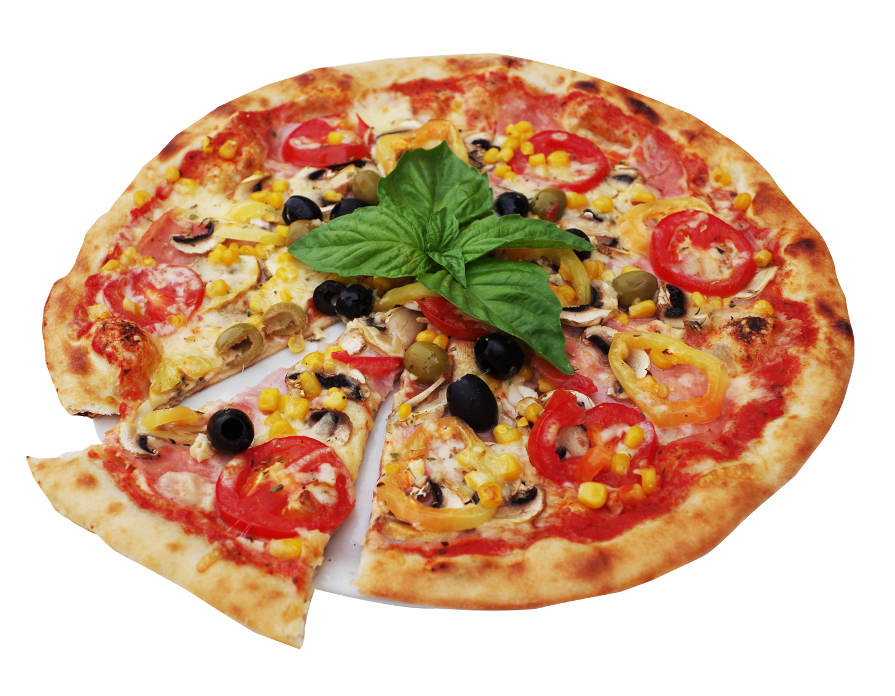

Te contamos un poco de Nuestra historia
Codo a Codo Pizzas, tradicional Pizzería de Córdoba, fue fundada en 1963 por dos amigos italianos: Mario Boyé y René Pontoni. Durante 40 años recibió a importantes figuras del ámbito deportivo y artístico de nuestro país. La casa ofrece una gran variedad de pizzas a la piedra, elaboradas en el momento en horno a leña.
Algunas de las especialidades de la casa son la Farineta: pizza rellena con cebollas, rodajas de tomate, jamón y muzzarella y la Veneciana: cebolla, jamón, rodajas de tomate y huevo duro. Sin olvidarse de la Muzzarella y la Napolitana, ésta con abundante ajo y hojas de albahaca. En Codo a Codo Pizzas podrá disfrutar de la mejor pizza a la piedra rodeados por un cálido ambiente familiar.

Tradicional Pizzería de Córdoba que ofrece las mejores pizzas a la piedra en hornos a leña.
Leer más